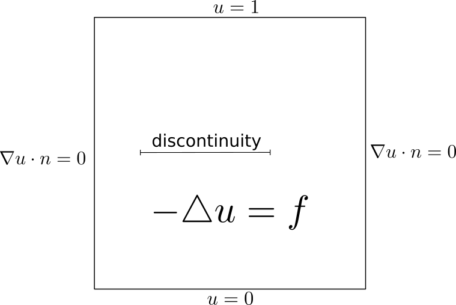
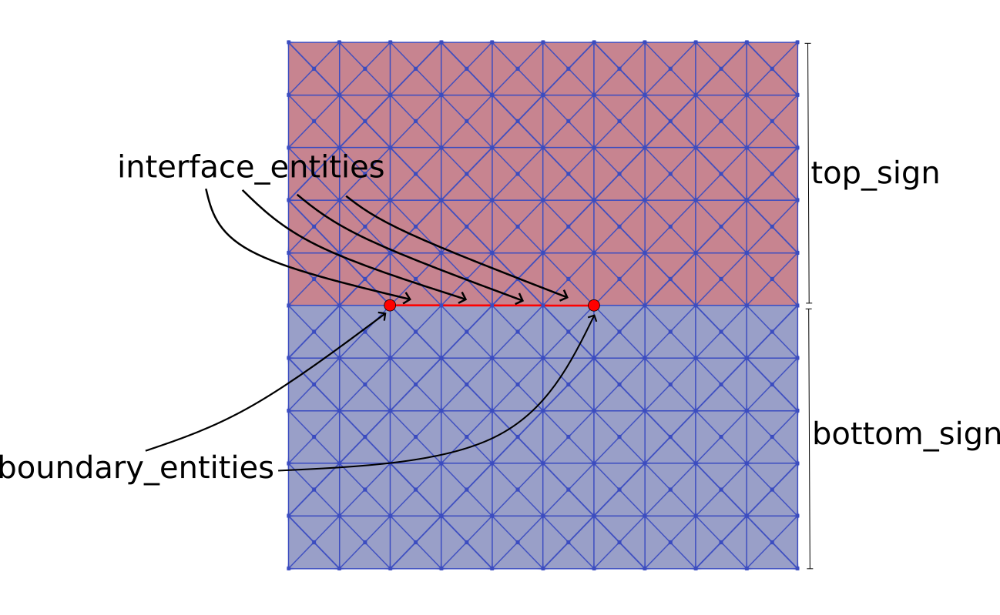

Broken Laplace
Problem Description
In this example we will solve only one equation in the domain, but there will be a disconinuity in the middle of the domain.
{kind=link}
Implementation
First we need to generate mesh which will be discontinuous along the discontinuity. For that purous there is function ‘make_broken_mesh’ and we can create the mesh easily as it is implemented in ‘make_broken_mesh.py’.
comm = MPI.COMM_WORLD
size = comm.Get_size()
val = 1
if size == 1:
parameters["ghost_mode"] = "none"
mesh = UnitSquareMesh(10, 10, "crossed")
dim = mesh.topology().dim()
interface = MeshFunction('size_t', mesh, dim - 1, 0)
# label the interface edges
for edge in entities(mesh, dim - 1):
x = edge.midpoint().x()
y = edge.midpoint().y()
if y == 0.5 and 0.2 < x < 0.6:
interface[edge] = val
make_broken_mesh(mesh, interface, val, directory='./mesh/', name='broken_mesh')
The mesh is saved to ‘mesh/broken_mesh.h5’. In this file is not only the mesh, but also markers of edges and point, which are demonstrated below.
{kind=link}
The mesh we will load in the main file broken_laplace.py.
mesh = Mesh()
with HDF5File(mesh.mpi_comm(), f"{directory + name}.h5", "r") as hdf:
hdf.read(mesh, "/mesh", False)
dim = mesh.topology().dim()
interface_entities = MeshFunction('bool', mesh, dim - 1, False)
boundary_entities = MeshFunction('bool', mesh, dim - 2, False)
hdf.read(interface_entities, "/interface")
hdf.read(boundary_entities, "/boundary")
We need to label cells form both sided from the discontinuity and label signs.
marker = MeshFunction("size_t", mesh, mesh.topology().dim(), 0)
for c in cells(mesh):
if c.midpoint().y() > 0.5:
marker[c] = 1
cell_val = 0 # bottom
top_sign = '-'
bottom_sign = '+' # plus corresponds to the cell val
Then we create function space, functions, boundaries and forms as we are used to.
V = FunctionSpace(mesh, 'CG', 2)
u = Function(V)
v = TestFunction(V)
# boundary conditions
top = CompiledSubDomain("near(x[1], top) && on_boundary", top=1.0)
bottom = CompiledSubDomain("near(x[1], bottom) && on_boundary", bottom=0.0)
bcb = DirichletBC(V, Constant(0.0), bottom)
bct = DirichletBC(V, Constant((1.0)), top)
bcs = [bcb, bct]
# ufl form
a = inner(grad(u), grad(v))*dx
f = Expression('exp(-(x[0]-0.5)*(x[0]-0.5)-(x[1]-0.5)*(x[1]-0.5) )', degree=2)
l = -10*f*v*dx
a += l
For the interface form we have here two examples. First the discontiuous one
theta = 0.5
a_interface = (
- theta*inner(Tn, v(bottom_sign))*dS - 10*inner(f, v(bottom_sign))*dS
+ (1-theta)*inner((u(top_sign) - 1*u(bottom_sign)), v(bottom_sign))*dS
)
dirichlet_bcs=None
And then the continous with dirichlet interface conditions.
a_interface = (
- inner(Tn, v(bottom_sign))*dS - 10*inner(f, v(bottom_sign))*dS
)
class Continuity():
def __init__(self):
pass
def jacobian(self, coordinates, x1, x2):
return [1, -1]
def residual(self, coordinates, x1, x2):
return x1[( )] - x2[( )]
dirichlet_bcs = [
(( ), Continuity(), top_sign)
]
The empty tupe ( ) means that there is no subspace. If we would have VectorFunctionSpace or MixedFunctionSpace we will need to specify the subspace by (i, ) or (i, j). Then we will create the solver and solve the problem.
solver = NonlinearBrokenSolver(u, marker, interface_entities, boundary_entities,
comm=None, interface_value=True, cell_val=cell_val, params=None, monitor=True
)
# solve
solver.solve(a, a_interface, bcs=bcs, bcs_zero=None,
dirichlet_interface=dirichlet_bcs
)